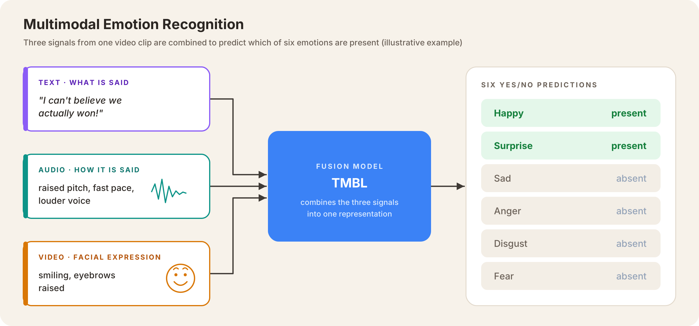
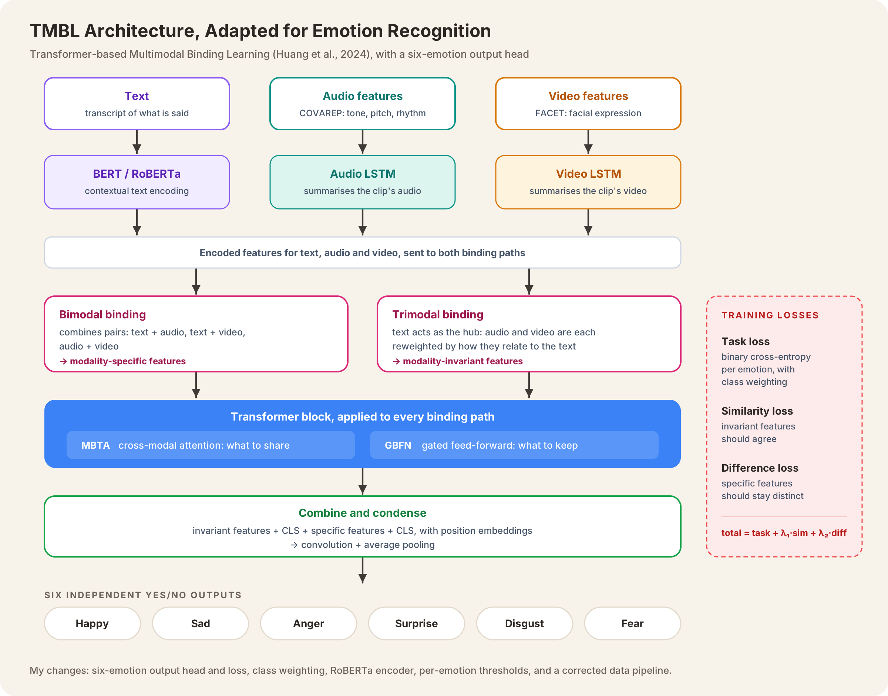
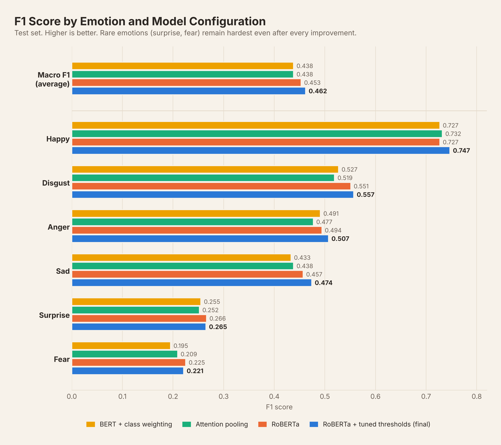

Research question
Multimodal emotion recognition identifies how someone feels by combining what they say (text), how they say it (audio), and their facial expressions (video).

TMBL (Transformer-based Multimodal Binding Learning; Huang et al., 2024) is a recent architecture built for sentiment analysis, which predicts whether an opinion is positive or negative. My dissertation asked two questions:
- Can TMBL be adapted to recognise six emotions: happy, sad, anger, surprise, disgust and fear?
- If its performance is limited, is the cause the model or the data?
Approach
Dataset. CMU-MOSEI: about 23,000 video clips of people speaking to camera, each labelled with the emotions viewers perceived.
Architecture. TMBL processes each modality separately first (BERT for text, LSTMs for audio and video), then combines them in pairs and all three together through a modified transformer block. It separates what the modalities share from what is unique to each, and trains with three losses that encourage this separation.

My work, step by step
- Replicated the original results. I reproduced TMBL’s published sentiment results to confirm the implementation was correct before changing anything.
- Fixed the data pipeline. Early results looked suspiciously poor, so I audited the dataset construction and found four bugs:
- normalisation applied per clip, which erased much of the audio and video signal
- infinite values in the audio features silently becoming extreme numbers
- a visual feature set of 713 dimensions where 35 were intended
- data segments being dropped without any record
- Adapted the model for emotions. I changed the output to six independent yes/no predictions, one per emotion, and switched the loss function to match.
- Ran a series of experiments: handling class imbalance, testing the text pathway (attention pooling and a stronger RoBERTa encoder), tuning decision thresholds, removing each modality in turn, and a “ceiling analysis” to measure how much audio and video could possibly add.
Results
Headline: macro F1 rose from 0.385 to 0.462. Macro F1 is the average detection score across all six emotions, with rare emotions counted equally.

- Class imbalance was the first problem. Fear and surprise appear in under 10% of clips, so the model mostly ignored them. Weighting the loss towards rare emotions gave the biggest single gain (0.385 → 0.438).
- A better text encoder helped a little. Switching BERT for RoBERTa added 0.015, and tuning a separate decision threshold for each emotion added 0.009.
- Against prior work. The final model beat a published benchmark (Akhtar et al., 2019) on weighted accuracy (66.9% vs 61.3–62.8%), but trailed it on weighted F1 (73.1% vs 76.2–78.6%). The gap was mainly on rare emotions.
Key findings
- The model is driven almost entirely by text. Removing text cost 0.096 macro F1. Removing both audio and video together cost only 0.017.
- The bottleneck is the dataset, not the model. A ceiling analysis showed audio and video could add at most 0.0167 macro F1 on top of text, and the model already captured about 97% of it. A better fusion design couldn’t have done much better on this data.
- This matters beyond my project. Because CMU-MOSEI is so text-dominant, it’s a weak benchmark for comparing multimodal fusion architectures. Improvements credited to a fusion design may really come from the text pathway.
- Check the data before blaming the model. The pipeline bugs I found would have made every later result misleading.
Limitations and future work
Limitations
- Each configuration was run without recording variance across runs, so small differences between configurations are observed differences, not statistically tested ones.
- The ceiling analysis used simple linear models, so it gives a practical estimate rather than an absolute limit.
- All findings are specific to CMU-MOSEI.
What I’d do next
- Test on richer data. IEMOCAP, where audio and video carry more emotional information, would give the fusion mechanism a fairer test.
- Use frame-level features. Averaging audio and video across each word likely removes fine emotional detail. Keeping the frames would show whether the low ceiling comes from the dataset or from how features were extracted.
- Weight modalities dynamically. Some sentences show emotion through words, others through tone or expression. Letting the model weight each modality per sample could use audio and video where they actually help.